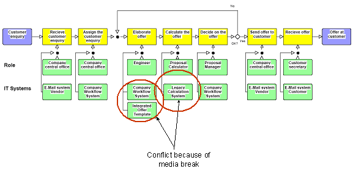
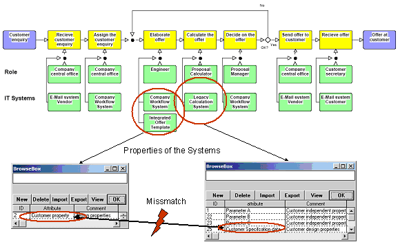
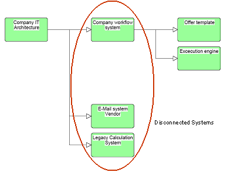

")

Interoperability analysis
Interoperability analysis
The EIMM based approach for Enterprise Modelling can be used for the derivation of an adequate elaboration of an Enterprise Model in order to determine interoperability requirements in detail. The following explanations are based on a small IEM model that addresses today not integrated legacy systems for enquiry processing in a company. So in the process view media and organisational breaks can be illustrated.

The process indicates also the relevant roles in the enterprises that are involved into the process execution. Information breaks can also be analysed in detail by showing the properties of the currently not interoperable systems.

In order to analyse the enterprise objects several views and diagrams can be used. The views should be integrated to each other in order to ensure consistent relations. As example in the next figure the IT Architecture of the company is sketched as part-of-structure. Here all disconnected systems can be identified in order to follow a holistic approach to integrate different IT Systems. Especially for business analysts the relation between all views of the enterprise model should be possible. For that also tables and textual descriptions generated from a model will be helpful.

The models should be used during all other phases described in Scenario-Specific Requirements and Generic Requirements, and Validation of Solutions according to the requirements. Here business consequences of solutions that fit to the requirements can be identified and calculated. For example, process the time reduction by reducing the information gaps or in this case by reducing the calculation activity through automatically calculation as well cost reduction or new business organisation can be simulated.
To summarise enterprise models will help in the step to perform the detailed analysis for a given interoperability situation. Here the input coming from BIF and EIMM are very helpful but not every time necessary to elaborate the requirements in an efficient way.